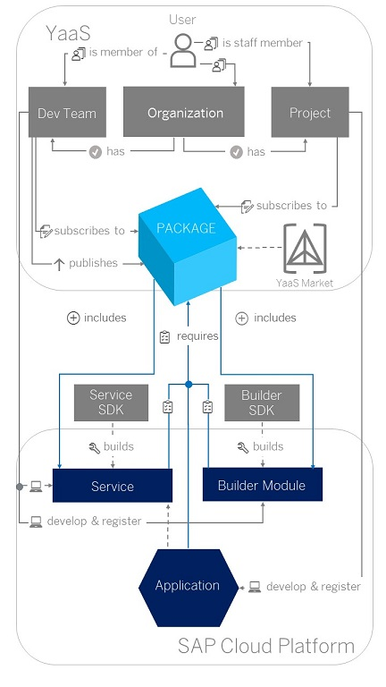

Business Services for YaaS
Using YaaS together with SAP Cloud Platform you develop business services that are consumed in your cloud applications.
With YaaS you can develop business services, publish and sell them through the YaaS Market, and consume them in your cloud applications. The core design principle behind YaaS is a microservice architecture, which enables you to build a flexible and scalable platform. A microservice architecture is another method of bundling components into services. The approach is to develop a single application as a suite of small services, each running in its own process and communicating with lightweight mechanisms, often an HTTP resource API. These services are built around business capabilities and are independently deployable by fully automated deployment machinery.
In YaaS, you develop the following component types when providing new services or consuming existing ones:
-
Business services
A business service is simply a microservice that provides a specific business functionality, such as products, loyalty, or orders. A set of business services is grouped into a package that gets published on the YaaS Market.
A business service is a Web application with a RESTful API that exposes the resources and functions of the service. The service implementation should follow the guidelines for microservices so that the service has a clearly defined scope, is highly scalable, resilient against failures, and self-contained. We recommend using the YaaS Service SDK
 to create new business
services, as it provides a lightweight framework that helps with the API
definition and implementation of the service. The SDK uses RAML (RESTful API
Modeling Language) as an API modeling language and provides code generators
to create the JAX-RS compliant Java API classes and Java implementation
stubs. It further provides helper classes to get, for example, the YaaS
tenant and other YaaS relevant information that is propagated from YaaS to
the business service.
to create new business
services, as it provides a lightweight framework that helps with the API
definition and implementation of the service. The SDK uses RAML (RESTful API
Modeling Language) as an API modeling language and provides code generators
to create the JAX-RS compliant Java API classes and Java implementation
stubs. It further provides helper classes to get, for example, the YaaS
tenant and other YaaS relevant information that is propagated from YaaS to
the business service.
-
Builder modules
A builder module is a user interface in the YaaS Builder application, in which the backoffice functionality of a business service is managed; for example, an administration UI for a service published in YaaS.
Builder modules are the backoffice clients of YaaS. They allow users to manage the service data from the user interface. Typically, a builder module is an HTML5 application calling the service APIs. As such, it is very easy to deploy it as a Java Web Tomcat 7 application on SAP Cloud Platform: create a builder module according to the tutorial on YaaS Dev Portal
, add Cross-origin resource
sharing (CORS) configuration to the web.xml, and build a
WAR file.
-
Applications
An application is able to consume the business services to which it is subscribed. Subscribing to existing packages is possible via the YaaS Market.
|
 |
This is where Yaas and SAP Cloud Platform stand in the whole picture. As a User, you need an account and have to be part of an Organization. Within the Organization, there are Dev Teams and Projects. In the Dev Teams you develop services and builder modules. In the Projects, you consume these services. When you are member of a Project, you can manage projects and subscribe to packages. The Package stands in the middle of the
whole picture. It connects the YaaS components, the Yaas Market
and the SAP Cloud Platform components. All available
published packages are listed in the YaaS Market The Services are the building blocks of YaaS. They are small, isolated applications that are responsible for one single piece of functionality. The Service SDK is a tool that facilitates the development of the business services. It also provides some YaaS-specific utilities, for example, retrieving the tenant ID propagated by an application to the used business services. After creating a service, you create a Builder Module for that service. This enables you to have a user interface (UI) to manage your service from a business perspective. The Builder SDK helps you create this UI. This is a command-line interface that runs the Builder in developer mode. This mode implements a builder module faster and more efficiently. |
To try out an example business service, follow the steps in the Tutorial: Creating a Wishlist Service.
For example, once subscribed to the Wishlist package, you can use the wishlist service API to create and manage wishlists. As a Dev Team member, you can develop and register the Wishlist package.
The Wishlist package contains the services and the builder modules, and you can make them available in the YaaS Market. Other users can subscribe to this package and use these services and builder modules.